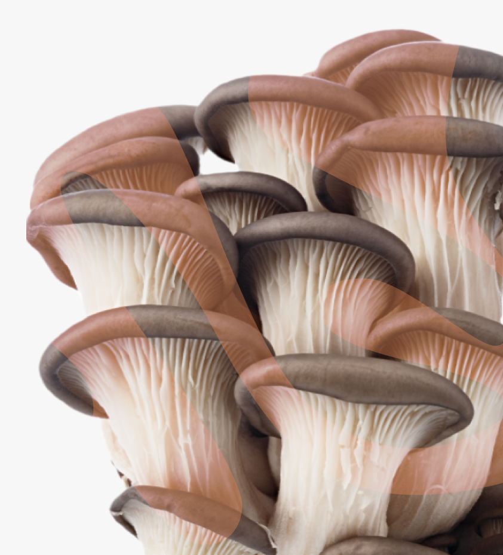

Toxic
PDF формат
Toxic  Mush
Mush
Как выявить ядовитый гриб?
Правильно узнавать ядовитые грибы и отличать их от съедобных — это важный и сложный навык. Вот несколько рекомендаций, которые могут помочь вам в распознавании ядовитых грибов.